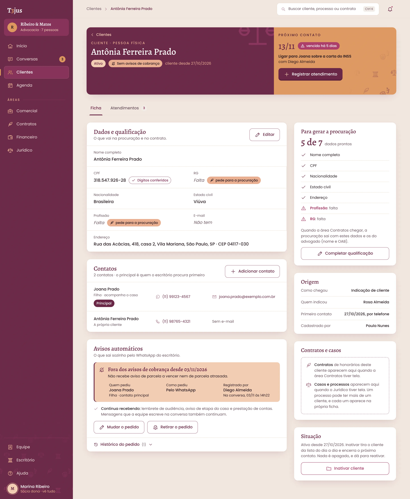

Cliente fora dos avisos de cobrança
Antônia, da ficha aprovada. O selo “Sem avisos de cobrança” fica ao lado de “Ativo”. A folha diz desde quando, quem pediu (Joana, a filha), como (pelo WhatsApp) e quem registrou (Diego, na conversa); o que continua saindo; “Mudar o pedido”, “Retirar o pedido” e o histórico.
Abrir: sem-avisos.html?estado=ficha (estreite a janela para ver o celular)